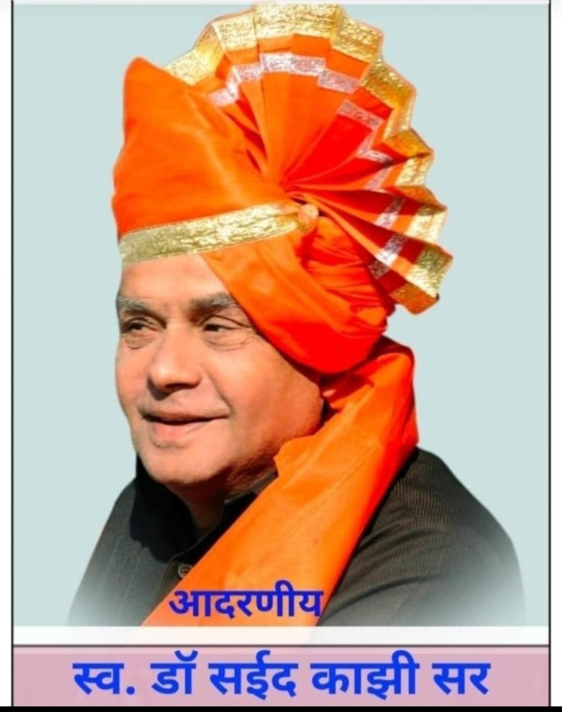
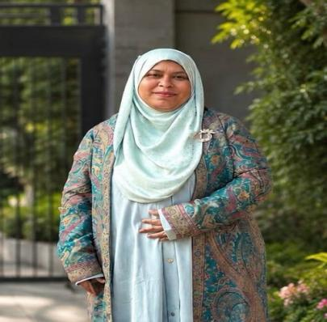

IZAK English Medium School & Junior College brought quality English-medium education to a remote, drought-affected corner of Parner Taluka. Two decades on, over 2,500 students learn here — many of them the first in their family to do so.
Current enrollment and staffing at this campus, Primary through Higher Secondary.
As of the school's most recent enrollment record.
39 teachers, led by Principal Pathan Shirin Sultan, covering every subject from Nursery through Std 12.
Run by Alfa Social & Educational Foundation, Ahmednagar (Reg. No. F 8812), a Minority Status institution working in health, education, and social welfare across Bhalwani for over 24 years.
Alfa Social and Educational Foundation, Ahmednagar, Registration No. F 8812, is a registered institution and has been granted Minority Status. For the last 24 years, the institution has been working in the health, education, and social sectors in Bhalwani, a remote and drought-affected area of Parner Taluka. The founder of the institution, Dr. Saeed Ahmed Kazi, began his medical practice at Bhalawani. While practicing medicine, he observed that many children from poor families in the surrounding area were deprived of education. Inspired by the noble belief that education is like the milk of a tigress and should be accessible to every section of society, Dr.Saeed Ahmed Kazi brought quality education to a remote and tribal area such as Bhalawani in Parner Taluka. He has become a strong pillar of support for the students of this region.
In 2004, the IZAK English Medium School was started at Bhalwani with all necessary physical facilities. The school provides education from Standard Nursery to Standard 12, and more than 2,500 students are receiving education in English medium. Separate, well-equipped hostels for boys and girls are available for the accommodation of students. The State Government has recognized the school as a reputed English-medium school and has sent approximately 550 students belonging to Scheduled Tribes to study there. Due to the provision of quality education to students from rural areas, the school has achieved a 100% pass percentage in Standards 10 and 12. Many students have passed with distinction and have gone on to work as doctors, engineers, lawyers, IT professionals, and government officers.
In the competitive era, continuous efforts are being made to help students progress in all fields. Education and training are provided according to students' interests in arts, sports, cultural activities, competitive examinations, and technical education. Every year, students achieve success at the state level in sports competitions. Due to the vision of Dr. Saeed Kazi, large and quality educational campuses have today been established in remote and drought-affected areas such as Dhawalpuri and Bhalawani. Approximately 300 to 350 employees from different communities are working at these campuses. The small sapling planted in the form of a primary Ashram School has today grown into a huge banyan tree. Dr. Saeed Ahmed Kazi is regarded as a strong pillar of support for the educationally deprived people belonging to nomadic and denotified communities, not only in Dhawalpuri and its surrounding areas but throughout Maharashtra.

17 December 1952 — 24 April 2020 · BHMS, Gune Ayurved College, Ahilyanagar
Dr. Kazi began his medical practice in Bhalwani. Believing that education is like the milk of a tigress — meant for every section of society — he brought quality schooling to this remote, tribal part of Parner Taluka, starting IZAK English Medium School in 2004.
What began as a small primary Ashram school has, in his words and in the community's, grown into a banyan tree — today supporting campuses at both Bhalawani and Dhawalpuri, and roughly 300 to 350 staff drawn from different communities across the region.
Three stages, each building on the last — with personalised attention, regular assessment, and a clear line through to board exam results.
Sports, arts, cultural activities, and competitive-exam coaching, with hostel life for students who travel in from further afield.
Alfa Social & Educational Foundation, carrying the founder's work forward.
MCA — Master of Computer Application
Bachelor of Arts

BPTh · Diploma in Nutrition Education
Open across Nursery through Standard 12, with hostel places available for boys and girls from outside Bhalwani.
Tour the Bhalwani campus and meet the teaching staff.
Share your child's details below and we'll follow up directly.
Bring prior school records, if any, along with basic documents.
The school office confirms placement and, where needed, hostel accommodation.
Tell us a little about your child and the school office will follow up about a visit and admission.